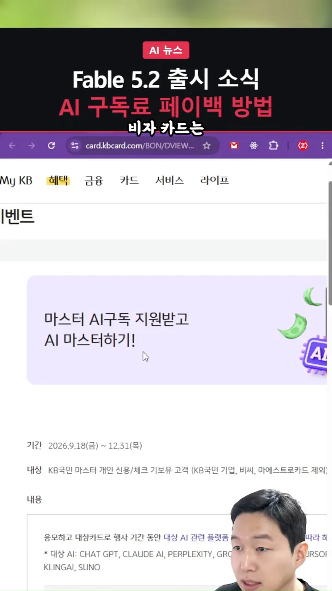
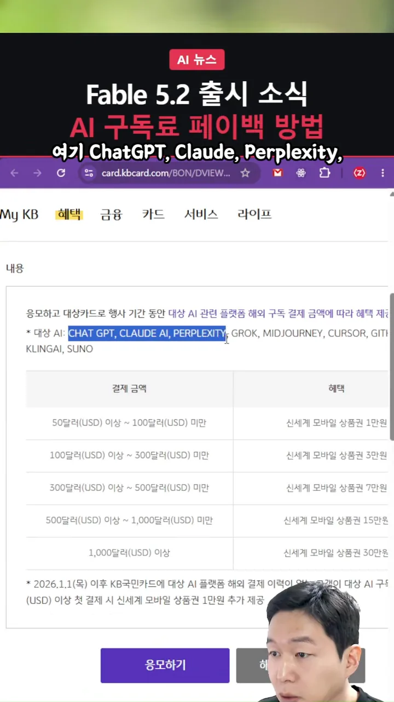
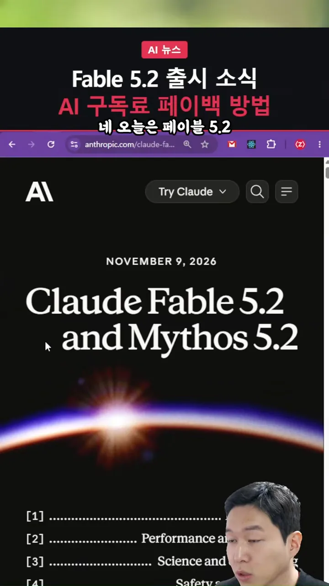
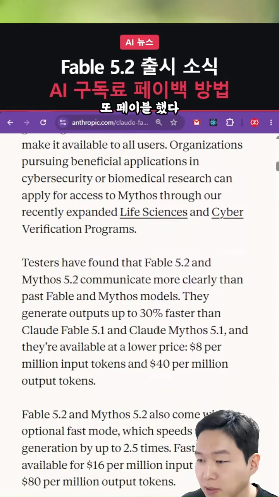
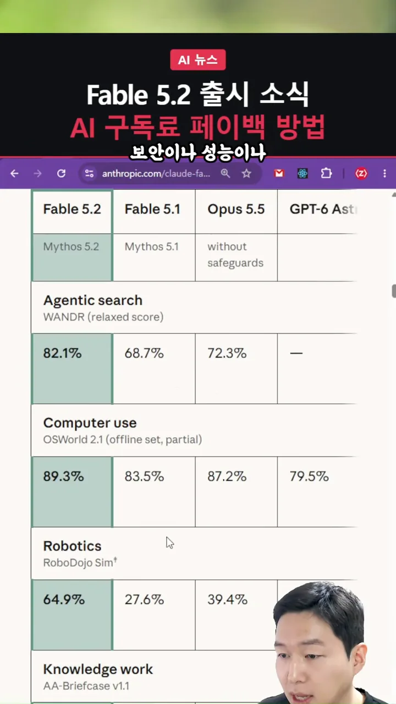
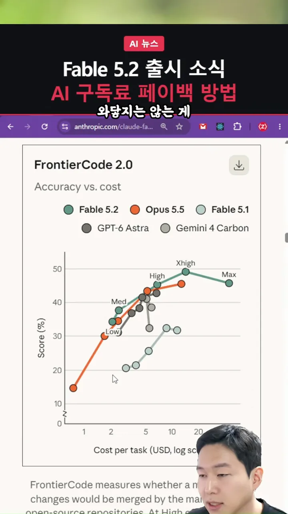
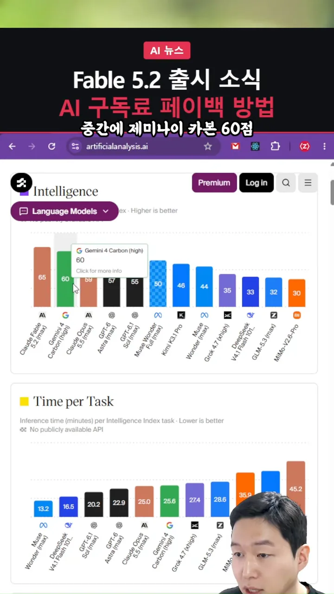
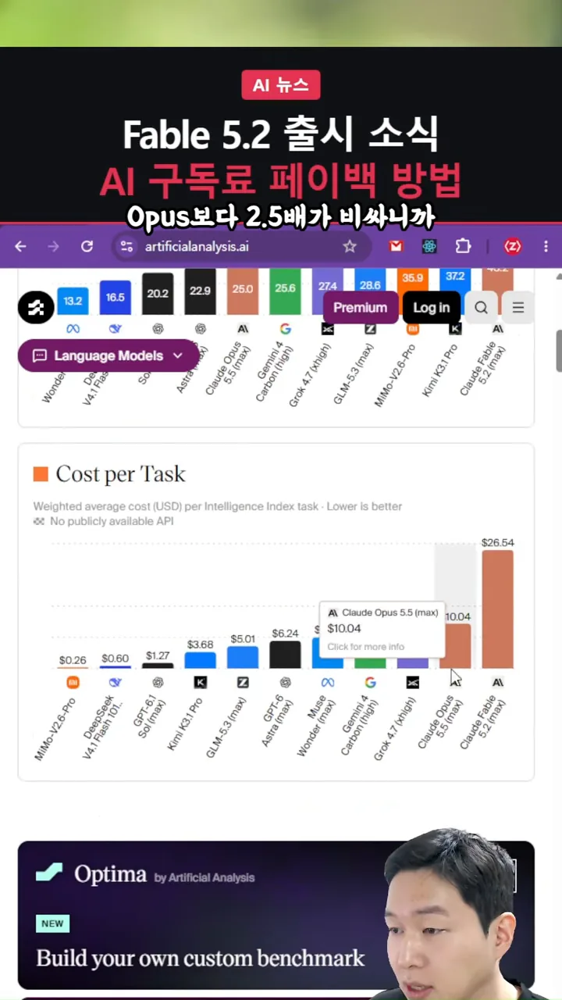
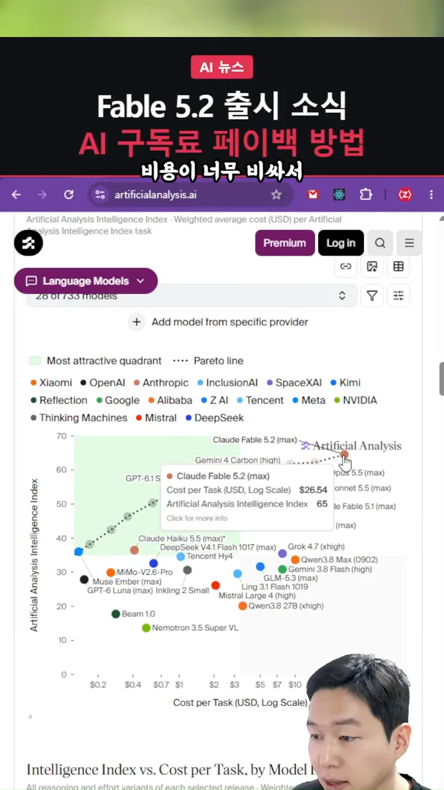

KB국민카드 AI 구독 페이백 이벤트
KB국민카드가 AI 구독료 일부를 상품권으로 돌려주는 페이백 이벤트를 하고 있어요. 이벤트 이름은 '마스터 AI구독 지원받고 AI 마스터하기'예요. 아래 화면 위쪽에 기간과 대상이 적혀 있어요. 기간은 2026년 9월 18일(금)부터 12월 31일(목)까지예요. 대상은 KB국민 마스터 개인 신용·체크카드를 가진 사람이고, 기업카드·BC(Bank Card)카드·마에스트로카드는 빠져요.

얼마를 쓰면 얼마를 돌려주나요
본문 첫 줄의 파란 글씨가 대상 AI 서비스예요. ChatGPT, Claude, Perplexity, Grok, Midjourney, Cursor, GitHub, Kling AI, Suno를 해외 결제한 금액에 따라 신세계 모바일 상품권을 줘요. 표는 다섯 구간으로 나뉘어 있어요.

화면의 표 글씨가 작아서 다시 옮겼어요.
| 행사 기간 결제 금액(USD(United States Dollar)) | 받는 신세계 모바일 상품권 |
|---|---|
| 50달러 이상 ~ 100달러 미만 | 1만 원 |
| 100달러 이상 ~ 300달러 미만 | 3만 원 |
| 300달러 이상 ~ 500달러 미만 | 7만 원 |
| 500달러 이상 ~ 1,000달러 미만 | 15만 원 |
| 1,000달러 이상 | 30만 원 |
표 아래 별표에 혜택이 하나 더 있어요. 2026년 1월 1일 이후 KB국민카드로 대상 AI 서비스를 해외 결제한 적이 없는 사람이 20달러 이상 첫 결제를 하면 상품권 1만 원을 더 줘요.
놓치기 쉬운 두 가지
- 결제하기 전에 '응모하기'를 먼저 눌렀나요? 발표자는 결제 전에 반드시 응모부터 하라고 해요.
- 비자 카드라면 비자용 페이지에서 응모했나요? 화면의 페이지는 마스터 카드용이에요. 'KB 비자 AI 구독 지원'처럼 찾으면 비자용 이벤트 페이지가 나와요.
발표자는 쿠팡 KB 카드가 비자라서 비자 쪽으로 응모했다고 해요. 혜택이 좋으면 카드를 새로 만드는 것도 나쁘지 않다고 봐요. 다른 나라 국민인 것처럼 결제해 싸게 사는 방법은 공식적으로 권하기 어렵다며 선을 그어요. 이런 공식 이벤트를 알면 댓글로 나눠 달라고 해요.
Fable 5.2는 무엇이 나아졌나요
Anthropic은 2026년 11월 9일 Claude Fable 5.2와 Mythos 5.2를 함께 발표했어요. 발표자의 평은 짧아요. 이미 Opus 5.5가 최고 모델이었는데, Fable 5.2가 그 기록을 거의 다 갈아치웠다는 거예요.

발표자가 스크롤하며 지나간 문단에는 값과 속도가 적혀 있어요. Fable 5.1·Mythos 5.1보다 출력이 최대 30% 빠르고, 값은 입력 100만 토큰에 8달러, 출력 100만 토큰에 40달러로 더 싸졌다고 해요. 그 아래 문단은 토큰 생성을 최대 2.5배 빠르게 하는 fast mode를 소개해요.

비교표에서 눈에 띄는 칸
발표 페이지의 비교표에서 맨 왼쪽 초록 칸이 Fable 5.2예요. 화면에 보이는 세 항목 모두 Fable 5.2가 가장 높아요. 특히 로보틱스는 64.9%로, Opus 5.5(39.4%)와 차이가 커요.

| 항목 (벤치마크) | Fable 5.2 | Fable 5.1 | Opus 5.5 | GPT-6 Astra |
|---|---|---|---|---|
에이전트 검색 (WANDR) | 82.1% | 68.7% | 72.3% | — |
| 컴퓨터 유즈 (OSWorld 2.1) | 89.3% | 83.5% | 87.2% | 79.5% |
| 로보틱스 (RoboDojo Sim) | 64.9% | 27.6% | 39.4% | 29.8% |
그래서 발표자는 이제 GPT-7이 나올 차례가 아니냐고 해요.
그런데 왜 체감이 안 될까요
발표자는 FrontierCode 2.0 그래프를 띄워 놓고 솔직한 감상을 말해요. 그래프는 가로축이 작업당 비용, 세로축이 점수예요. 초록 선(Fable 5.2)이 주황 선(Opus 5.5)보다 조금 위에 있어요. 하던 일을 조금 더 잘하는 정도라는 거예요.

기존에 하던 작업들을 조금 더 잘한다. 요런 수준이지 기존에 불가능했던 것이 가능해졌다. 이런 건 아니기 때문에
— 영상 01:37
Fable 6이나 GPT-7처럼 큰 버전이 나와야 체감될 거라고 봐요. 그만큼 이런 발전에 익숙해졌다는 뜻이기도 하다고 덧붙여요.
성능은 1위, 값도 1위
발표자는 즐겨 보는 독립 평가 사이트 Artificial Analysis로 넘어가요. 맨 위 지능 지수 막대에서 맨 왼쪽 주황 막대가 Claude Fable 5.2(max)로 65점이에요. 그 옆으로 Gemini 4 Carbon 60점, Claude Opus 5.5 59점, GPT-6 Astra 57점이 이어져요.

느리고, 비싸요
단점은 속도와 값이에요. 작업당 시간은 위 그림처럼 45.2분으로 가장 길어요. 아래 작업당 비용 그래프에서는 맨 오른쪽 막대가 Fable 5.2로 26.54달러예요. 바로 왼쪽 Opus 5.5는 10.04달러예요. 발표자가 말하는 'Opus보다 2.5배 비싸다'가 이 두 막대의 차이예요.

파레토 라인의 맨 끝
마지막 그래프는 가로축이 작업당 비용, 세로축이 지능 지수예요. 점선이 파레토 라인이고, 연두색 영역이 '가장 매력적인 구역'이에요. Fable 5.2는 점선의 맨 오른쪽 위 끝에 있어요. 성능만 보면 가장 앞서지만 값도 가장 비싼 자리예요.
